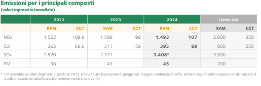
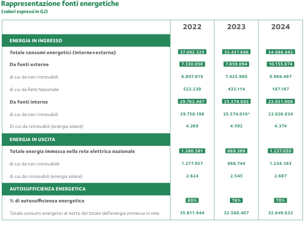
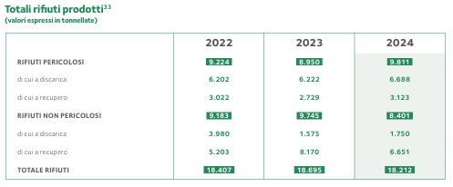

La Raffineria di Milazzo, situata nella Zona industriale di Milazzo, opera dagli anni ’60 nella raffinazione del greggio e distribuzione dei derivati. Occupa un’area di 212 ettari e ha avviato dagli anni ’90, un ampio processo di modernizzazione. Oggi è un esempio di impegno costante per la sostenibilità ambientale, valorizzato attraverso il Bilancio di Sostenibilità. I report di sostenibilità illustrano le performance e gli impatti sociali, ambientali ed economici di un’azienda. Offrono trasparenza verso gli stakeholder, comunicando le iniziative legate alla sostenibilità, nonché i rischi e le opportunità connessi alle attività aziendali.

Rappresentazione delle emissioni di fumi nell'ambiente nei diversi anni, se non per un aumento nel 2024, ma tutto secondo gli standard AIA (Autorizzazione Integrità Ambientale). Rif. Pag. 25

Rappresentazione delle fonti energetiche in uso nei periodi dal 2022 al 2024 con relativa energia in uscita in GJ ed autosufficienza espressa in percentuale. Rif. Pag. 27

Rappresentazione della produzione dei rifiuti con un significativo aumento tra il 2022 e il 2023, e una diminuzione verso il 2024. Rif. Pag. 33